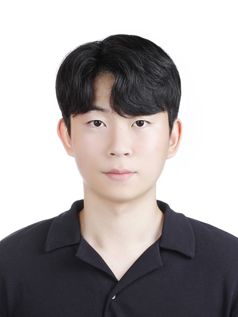

B.S. in Computer Science
Konkuk University, Seoul, Korea
GPA : 3.81 / 4.5
Major GPA: 4.0 / 4.5

Department of Computer Science & Engineering
Konkuk University, Seoul, Republic of Korea
I am a final-year undergraduate student in the Department of Computer Science & Engineering at Konkuk University, with a strong interest in machine learning and its applications to real-world problems. I am currently conducting research as an undergraduate intern at the GLI Laboratory, where I am preparing my graduation project on leveraging large language models agents.
My primary research interest lies in improving Question Answering performance, with a particular focus on Temporal Knowledge Graph Question Answering (TKGQA). Temporal knowledge graphs present unique challenges due to their complex, time-evolving structure, which makes faithful graph traversal and reasoning exceedingly difficult — a problem I find both compelling and underexplored. In parallel, I have developed a growing interest in Anomaly Detection through a research project in which I contributed to writing a domestic conference paper, broadening my perspective on the practical applications of machine learning beyond language understanding.
B.S. in Computer Science
Konkuk University, Seoul, Korea
GPA : 3.81 / 4.5
Major GPA: 4.0 / 4.5
Proposal of PCB component-level anomaly detection pipeline via object detection
KCC 2026 — Under Review
Diversifying Differentiable Graph Retrieval with Topic-Adaptive Multi-Intent Learning
The ACM Web Conference (WWW), 2026 - Accepted
우주항공 제조설비의 멀티모달 이상탐지와 실시간 생성형 AI 보고체계 기반의 AX전환 실증
GLI Laboratory, Konkuk University
- Project Member (2026. 01 ~ Present)
- Anomaly detection on PCBs in aerospace and aviation manufacturing equipment
- Automatically generates structured inspection reports based on the detected anomalies
Grand Prize - KU President’s Award
RISE AI-LivingLab Challenge 2025
Grand Prize - Best Project Award
Konkuk University Academic Contest
Third Place
University/Graduate Student Quantum Cryptography Communication Idea Contest
Advanced Data Analytics Semi-Professional (ADsP)
Computer Application Specialist, Level 2